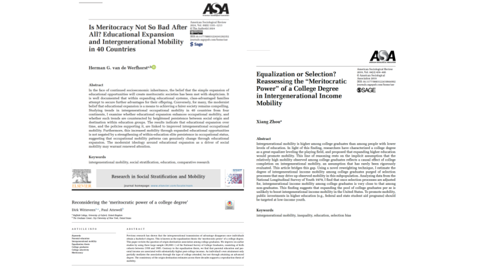
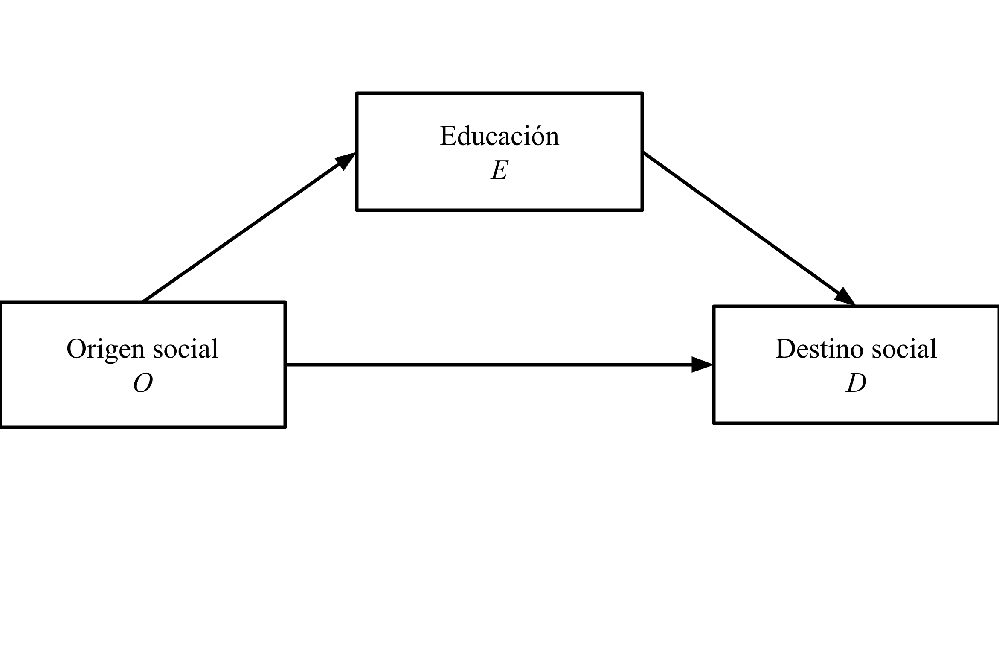
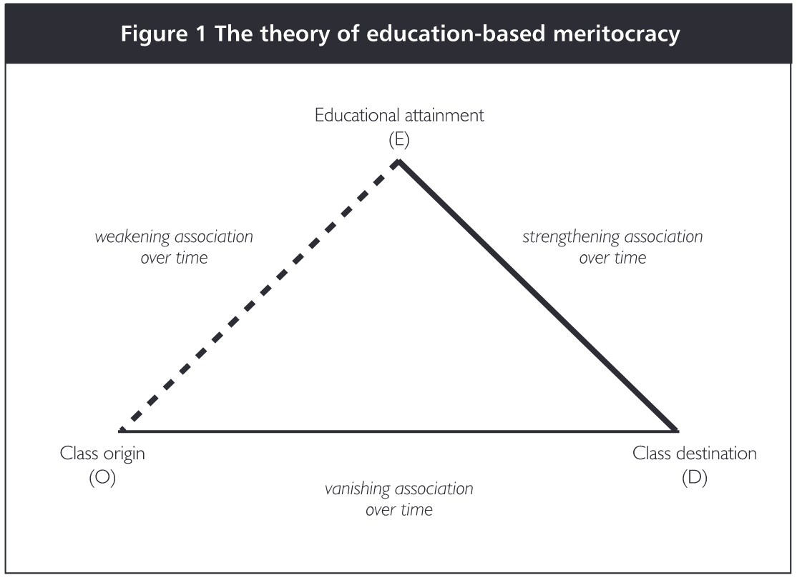

El rol de la educación en la movilidad social
Andreas Laffert1,2
1Instituto de Sociología, Pontificia Universidad Católica de Chile
2Centro de Estudios de Conflicto y Cohesión Social - COES
Seminario Estratificación Social - SOL3016
24 Septiembre 2025, Santiago
Textos

Antecedentes
Antecedentes: O-E-D

Antecedentes: O-E-D

Antecedentes: O-E-D
Es indiscutible que los hijos de familias aventajadas tienden a obtener destinos aventajados; transmición intergeneracional de ventajas/desventajas
El efecto O-D es mucho más débil entre los más educados, i.e., la movilidad es mayor entre los más educados (Chetty et al. 2017; Hout, 1988; Torche, 2011)
Hout (1988): Contar con un college degree de hecho “anula” el OD y, en consecuencia, la expansión educativa promueve la movilidad social total → poder meritocrático del degree
Los hijos de familias de bajos ingresos tienen menos probabilidades de terminar la universidad, pero cuando lo logran suelen beneficiarse más que sus pares de familias acomodadas (Zhou, 2019)
Antecedentes: la promesa meritocrática
Meritocracia: sistema donde los bienes y recompensas se distribuyen en base al mérito (esfuerzo + talento) (Young, 1958)
Modernización e igualdad de oportunidades (Dubet, 2011)
Las personas pueden seguir creyendo normativamente en la meritocracia incluso ante la evidencia de que las oportunidades están distribuidas de manera desigual (Mijs, 2019; Mijs et al., 2022)
La meritocracia como una promesa incumplible en las sociedades modernas que permite la perpetuación de las desigualdades sociales (Mijs, 2016; Sandel, 2020)
Ejes de análisis
Las tres investigaciones buscan analizar empiricamente dos hipótesis rivales:
Equalization: la expansión educacional promueve la movilidad social (Van De Werfhorst, 2024)
- Vía indirecta (O→E→D): al reducir la desigualdad de oportunidades educativas (el vínculo O-E) o al disminuir los retornos a la educación (el vínculo E-D)
- Vía directa (O→D|E): si la movilidad es mayor entre los más educados, el hecho de que más gente alcance niveles educativos altos (expansión) reducirá la persistencia total en la sociedad (efecto de composición)
Reproduction: aunque expansión debilita la vía indirecta (O→E→D), las familias con recursos compensarán esta pérdida fortaleciendo la vía directa (O→D|E); reproducción dentro de ciertos grupos usando nuevas formas (Witteveen & Attewell, 2020; Zhou, 2019)
Preguntas
(1) ¿La educación permite mitigar la transmisión intergeneracional de ventajas y desventajas?
(2) ¿La educación promueve la movilidad social en general o para algunos?
Witteveen & Attewell (2020)
Objetivo: determinar si la asociación entre el origen familiar y el destino económico persiste entre los graduados universitarios en Estados Unidos
Datos: National Survey of College Graduates (NSCG) de 1993, 2003 y 2015
Mediciones:
- Destino (VD): ingreso anual del hijo
- Origen (VI): nivel educativo más alto alcanzado por cualquiera de los padres (desde menos de secundaria hasta doctorado)
- Educación (M): nivel educativo del hijo
- Controles: edad, género, raza/etnia y si el encuestado nació en el extranjero
Estrategia: regresiones binomiales negativas (NB). Analizan si el propio nivel educativo del hijo/a (licenciatura vs. posgrado) media la relación
Witteveen & Attewell (2020)
Hallazgos:
- Contrario a la tesis de la igualación, encontraron una asociación “sustancial y persistente” entre la educación de los padres y los ingresos de sus hijos después de la universidad
- La influencia de O persiste tanto para quienes solo obtienen una licenciatura como para quienes alcanzan títulos avanzados. Este efecto no disminuye en las cohortes más jóvenes
- Factores como la selectividad de la universidad a la que se asiste solo median parcialmente la asociación OED
Contribuciones:
- Refuta empíricamente la “tesis de la igualación” en el contexto de Estados Unidos
Van De Werfhorst (2024)
Objetivo: determinar si la expansión educativa conduce a una mayor movilidad ocupacional y si esta relación es contrarrestada por un fortalecimiento de la asociación O-D dentro de los mismos niveles educativos (críticas a la meritocracia)
Datos: múltiples encuestas internacionales (ESS e ISSP) y cohortes
Mediciones:
- Movilidad (O-D): ridit scores por país-cohorte del ISEI del hijo/a y padre
- Educación: tres categorías secundaria baja o menos, secundaria alta, y título universitario o más
- Contextuales: expansión educativa y políticas que la promueven
Estrategia: enfoque de descomposición en dos pasos inspirado en Bloome et al. (2018)
Van De Werfhorst (2024)
Hallazgos:
- El path OD es más fuerte entre los menos educados y más débil entre los más educados
- Si lo anterior es cierto, la expansión educacional reducirá la persistencia intergeneracional total
- La expansión educativa se asocia a una mayor movilidad ocupacional; expansión afecta negativamente la vía índirecta (O-E-D) y directa (OD|E)
- No hay evidencia de que las familias de élite compensen la mayor igualdad de oportunidades educativas fortaleciendo la vía directa (OD|E)
Contribuciones:
- OD|E se reduce a medida que la educación superior se expande
- Evidencia favorable al rol igualador de la educación como motor de la movilidad ocupacional a nivel macro
Zhou (2019)
Objetivo: distinguir entre dos explicaciones para la alta movilidad intergeneracional observada entre los graduados universitarios en EE. UU.: la “ecualización” y la “selección”
Datos: National Longitudinal Survey of Youth 1979
Mediciones:
- Movilidad (O-D): rank-rank income mobility padres e hijos
- Educación: graduado universitario vs. no graduado. También se distingue entre graduados de universidades selectivas y no selectivas
- Confusores Z: conjunto de características pre-universidad
Estrategia: enfoque causal para distinguir entre movilidad condicional (unweighted) y movilidad controlada (reweighted) que corrige sesgo de selección
Zhou (2019)
Hallazgos:
- Condicionar por los college degree (grupo) induce un sesgo de selección (collider bias) en la estimación del efecto de la educación en la movilidad social
- La movilidad condicional es mayor entre los más educados en comparación a los menos educados
- Una vez que la selección es ajustada, la movilidad intergeneracional por ingresos entre los graduados es muy similar a la de los no graduados
Contribuciones:
- La selección explica la movilidad: la movilidad entre universitarios se debe a selección, no a un efecto igualador real del título.
- La mayor movilidad observada refleja que llegan al grupo jóvenes de origen bajo positivamente seleccionados (habilidad, motivación).
- Evidencia consistente con la reproducción / “effectively maintained inequality”
Diálogo entre las investigaciones
¿Ecualización o reproducción? → Apoyo a (Van De Werfhorst, 2024) vs. críticas de (Witteveen & Attewell, 2020; Zhou, 2019).
Van De Werfhorst (2024) asume el patrón composicional sin modelar selección; Zhou (2019) cuestiona esa premisa.
El efecto de la expansión educativa sobre OD puede ser en realidad selección (Zhou, 2019).
Desmantelando el O–E–D: descomposición en Van De Werfhorst (2024), vía directa en Witteveen & Attewell (2020), y advertencia de Zhou (2019) sobre sesgos si no se ajusta por características previas.
Discusión
Hallazgos dependen largamente del diseño métodologico: Macro vs. micro, decomposición vs. selección, movilidad ocupacional vs. ingresos
¿Son las credenciales un reflejo de la meritocracia?
Implicaciones políticas: Si queremos más movilidad, ¿qué debemos hacer?